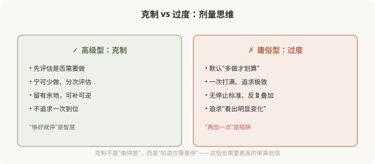
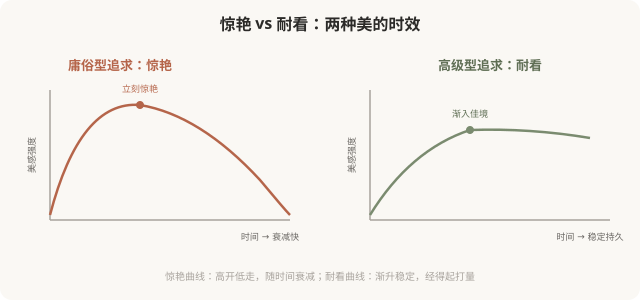
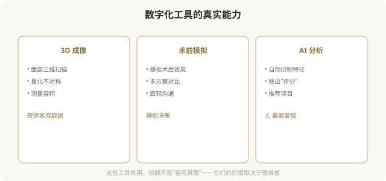
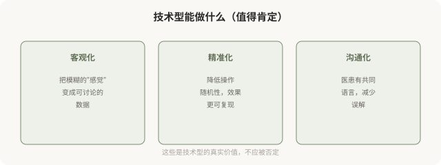
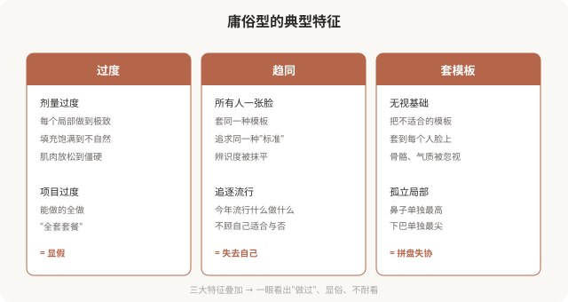
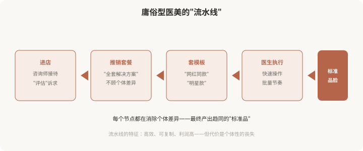

高级型 · 技术型 · 庸俗型
医美美学三型
医美审美的三种境界分类。倡导克制与整体,警示趋同与过度,一份审美升级指南。

医美美学三型
医美美学三型：高级、技术、庸俗，你的医美属于哪一型
医美审美可分为高级型、技术型、庸俗型三种。本系列明确倡导高级型、警示庸俗型，帮你识别自己处于哪一型，并理解如何走向更耐看的结果。
阅读全文
医美美学三型
高级医美美学的核心：克制、整体、个性化
高级医美美学的核心是克制、整体、个性化。它不以“做了多少”衡量好坏，而以“是否耐看、是否属于你”为目标。这是本系列倡导的方向。
阅读全文
医美美学三型
高级型的医患协作：你和医生是审美合伙人
高级型医美中，你和医生是审美合伙人，共同参与决策，而非一方主导。理解这种协作关系，是走向高级型的关键。
阅读全文
医美美学三型
高级型的智慧：耐看比惊艳更难，也更重要
高级型医美的结果是“耐看”，经得起时间、经得起潮流变化。这种耐看来自克制与整体的智慧，是高级型的终极标志。
阅读全文
医美美学三型
技术型医美美学：当审美被数据和参数定义
技术型医美美学以测量、比例、参数为核心，追求精准可复现。它是工具而非标准，理解它的能力与边界，才能用好而不被它奴役。
阅读全文
医美美学三型
数字化设计与 3D 模拟：看见未来，但别迷信
数字化设计和 3D 模拟能让术前预见结果，是技术型医美的重要工具。但它有局限，模拟≠现实，理解边界才能用好它。
阅读全文
医美美学三型
技术型的边界：当精准变成冷漠
技术型医美追求精准，但精准有边界，气质、辨识度、协调感无法用数据衡量。理解技术型的“不能”，才能避免滑向庸俗。
阅读全文
医美美学三型
庸俗型医美美学：为什么有些医美显俗
庸俗型医美以过度、趋同、套模板为特征，结果往往显假显俗。它不是钱花得不够，而是思路出了问题。本系列警示并分析这一型。
阅读全文
医美美学三型
流水线化与趋同：当医美变成批量生产
庸俗型的核心机制是“流水线化”，套餐化、模板化、咨询师主导，把个体脸变成批量产品。理解这条生产线，才能跳出它。
阅读全文
医美美学三型
从庸俗走向高级：一份审美升级的实践指南
走向高级型是观念和选择的双重升级：从追逐流行到尊重个体、从过度到克制、从被动到协作。这是系列的收尾与实践指南。
阅读全文